Inside a Feistel Cipher
A hands-on cryptography project implementing a simple Feistel cipher in C, exploring how classic block ciphers transform plaintext through rounds and symmetry.
Nikolaos Bermparis works as an Associate Researcher in cybersecurity and post-quantum cryptography with a focus on secure systems, quantum-resilient architectures and next-generation cryptographic transition. His work spans applied security research, post-quantum system design and emerging cryptographic directions relevant to resilient digital infrastructure. He has also participated in research and innovation activities connected to Horizon-funded projects, gaining experience in collaborative European research environments.
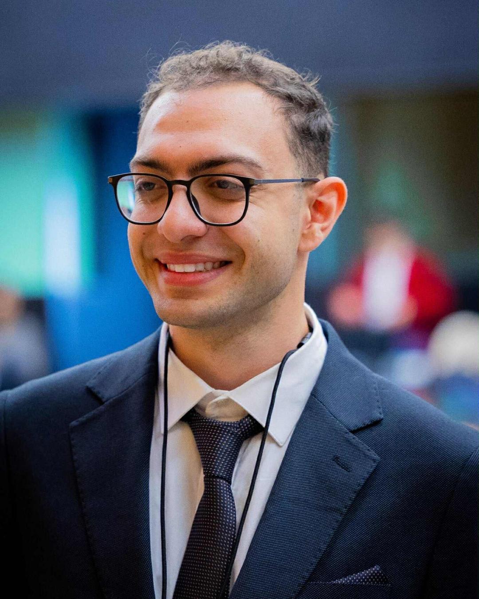
Selected ongoing and past work in cybersecurity, AI and advanced communication systems.
A hands-on cryptography project implementing a simple Feistel cipher in C, exploring how classic block ciphers transform plaintext through rounds and symmetry.
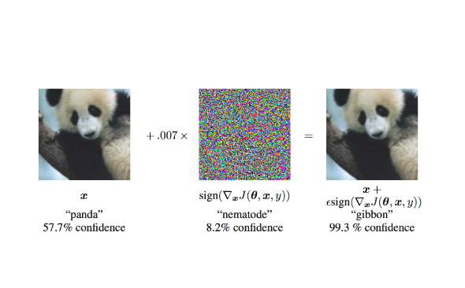
Evaluating FGSM/PGD pipelines across ML models; robustness techniques including adversarial training and certified defenses.
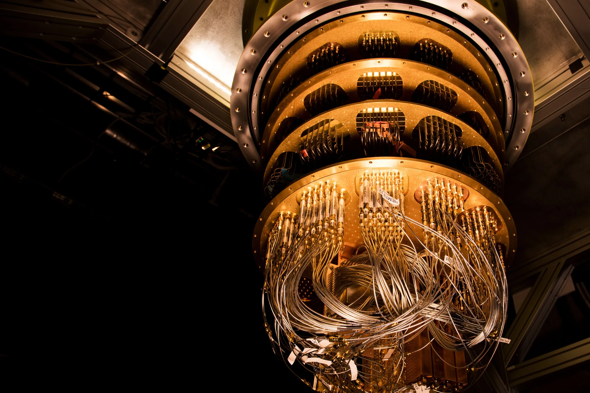
Designing PQC-ready protocols and VPN primitives using lattice-based schemes for next-generation communication security.
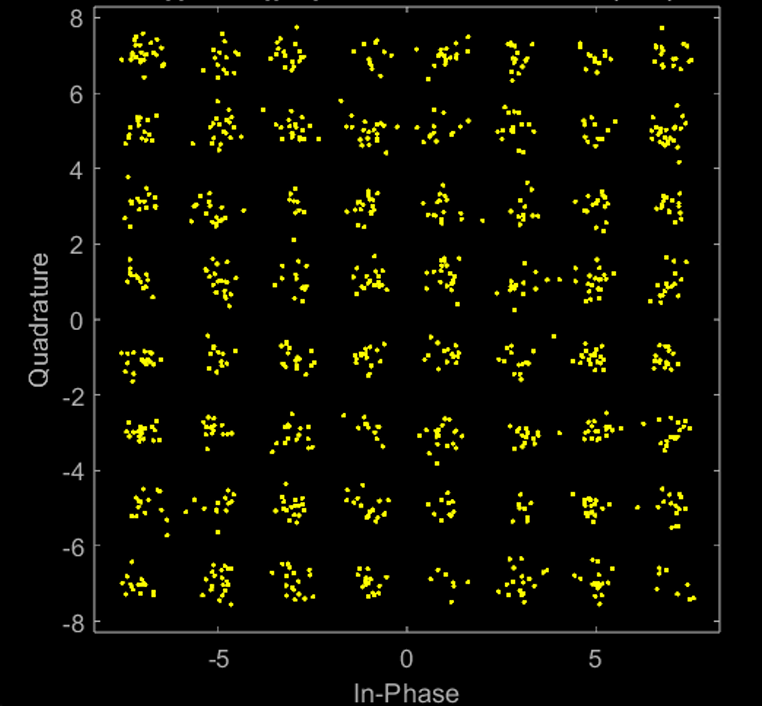
A full PHYSEC simulation suite combining coding, 64-QAM, AWGN/3×3 MIMO, and beamforming to evaluate Alice–Bob–Eve secrecy via entropy, PER, and SVD-based secrecy capacity.
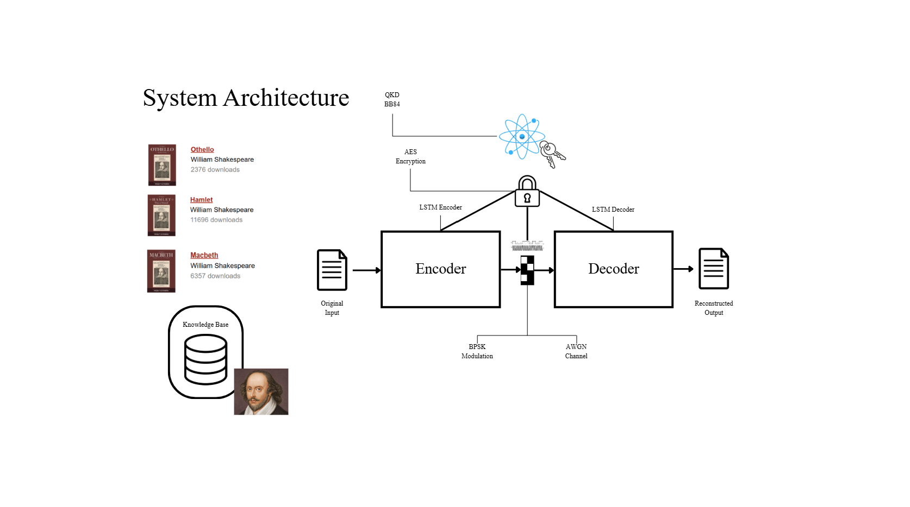
An end-to-end semantic communication system integrating LSTM autoencoders, BPSK modulation, and QKD-seeded AES-CBC encryption.
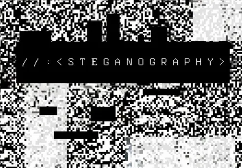
A modular C-based steganography toolkit starting with BMP LSB embedding/extraction. Educational and research-oriented.
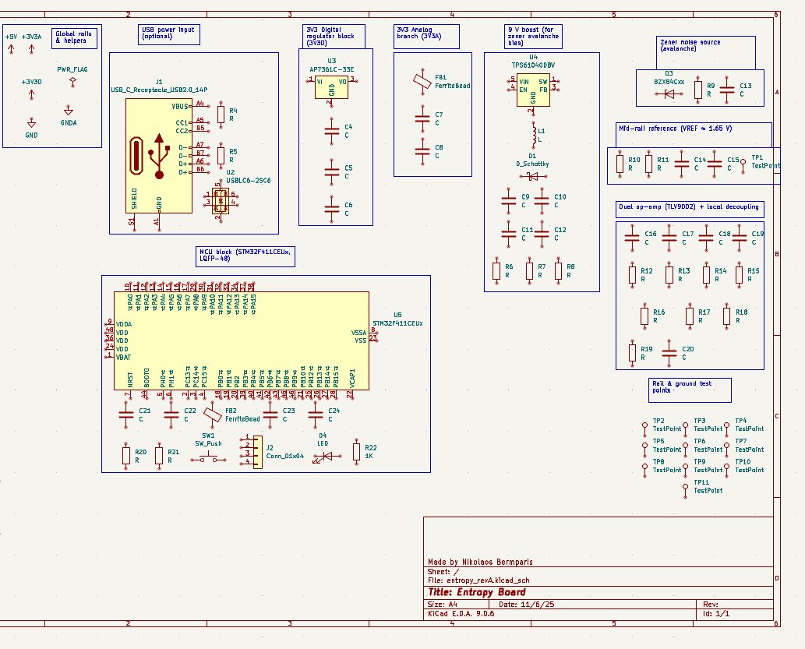
Hardware entropy generator using avalanche noise, op-amp amplification, and MCU sampling. Designed for PQC and embedded security.
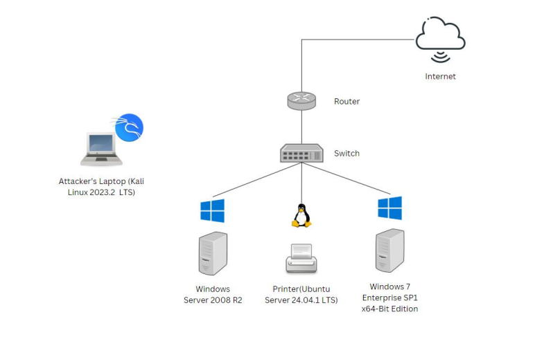
Simulating lateral movement techniques using Sysmon for detection and analysis.
A curated selection of talks, workshops, conferences, and academic activities.
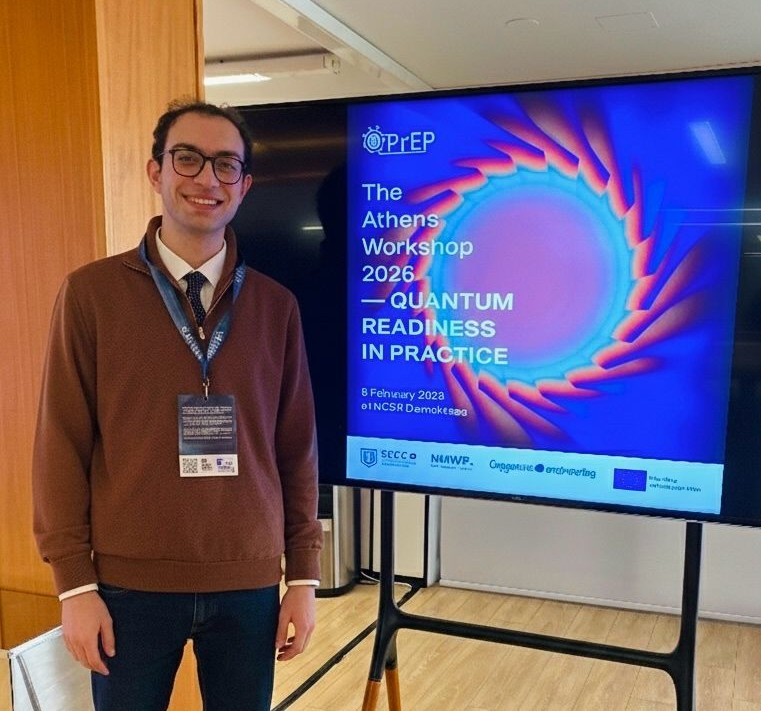
Attended Q-PrEP 2026 in Athens, exploring post-quantum cryptography, QKD and quantum-safe transition strategies across Europe.
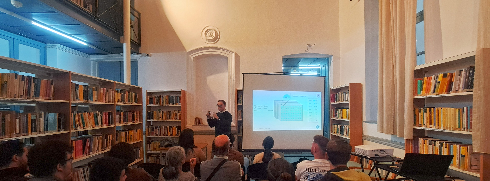
From Project Gutenberg and the Library of Alexandria to AI-powered libraries, this talk explored how libraries evolve into intelligent, interactive knowledge spaces.
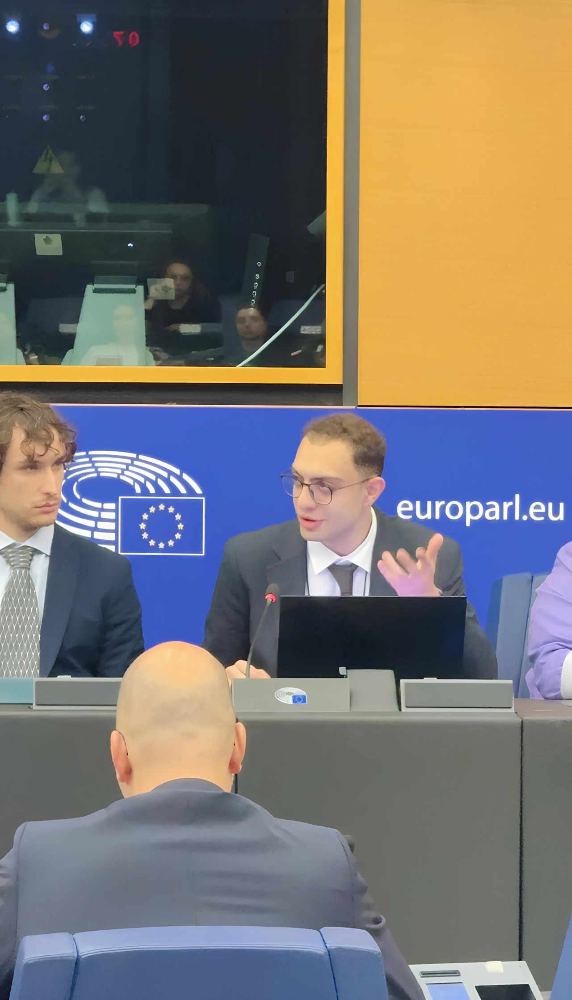
Participated in ESA25 at the European Parliament, contributing to policy discussions on AI, mental health, and digital transformation across the EU.
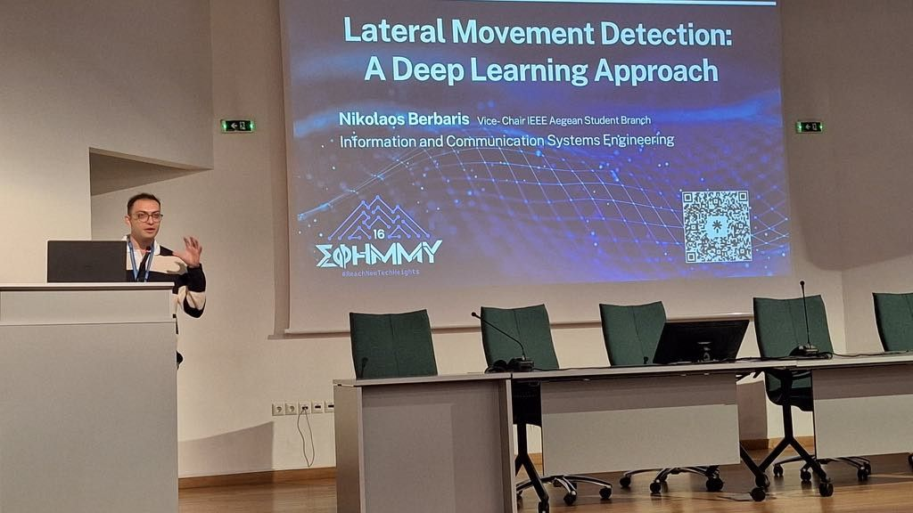
Represented the IEEE Aegean Student Branch at Greece’s largest Computer Engineering student conference, presenting technical sessions and academic activities.
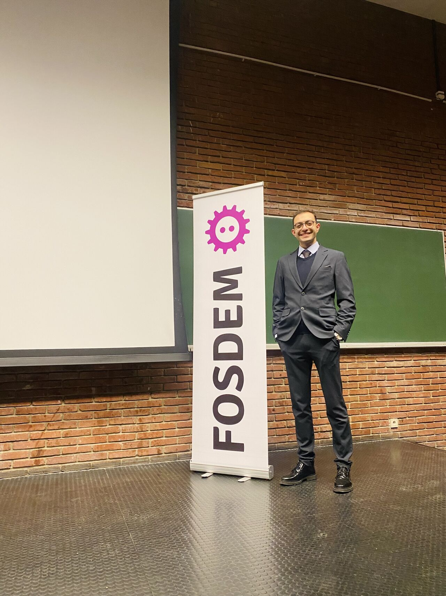
Attended Europe’s largest open-source conference, exploring cutting-edge developments in DevOps, IoT, cybersecurity, and AI tooling.
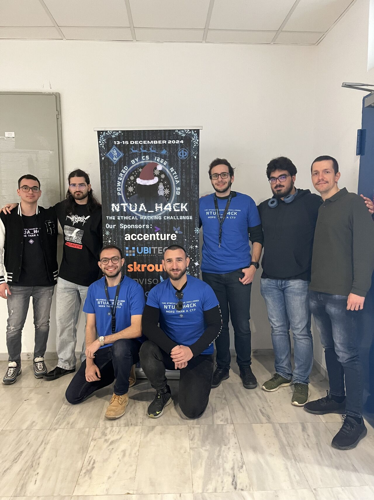
Participated in NTUA’s national hackathon, developing applied solutions in AI-driven cybersecurity and system automation.
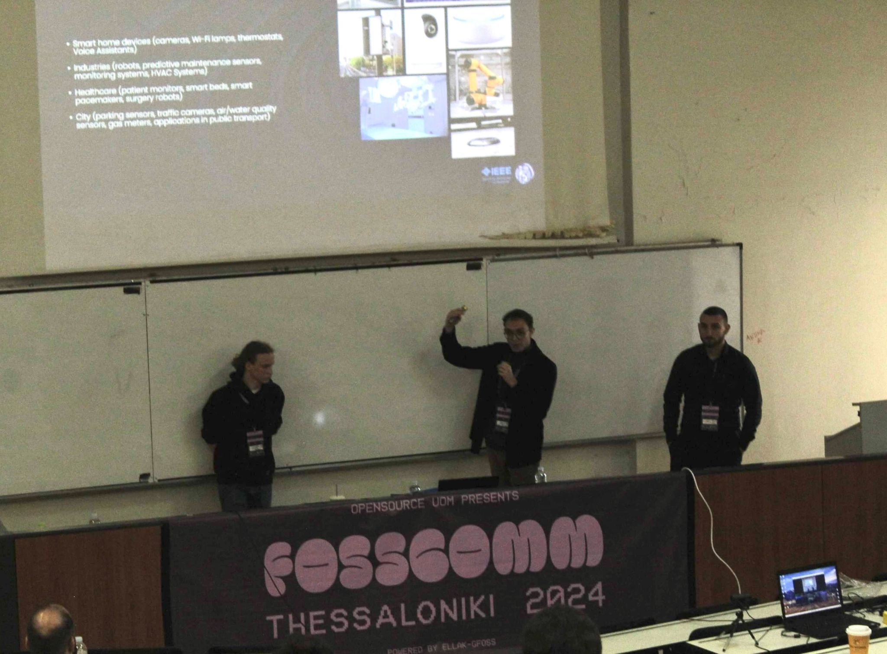
Presented cybersecurity and IoT honeypot research at Greece’s largest open-source community conference.
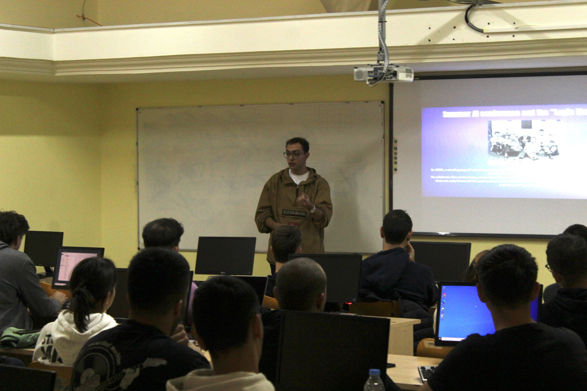
Participated in the AIRV event focusing on next-generation robotics, reinforcement learning, and applied computer vision research.
Reach out for collaborations, research visits, publications, or academic opportunities.